Show R Code
library(tidyverse)
library(fmsb)
library(echarts4r)
library(ggchicklet)
library(scales)
library(reshape2)library(tidyverse)
library(fmsb)
library(echarts4r)
library(ggchicklet)
library(scales)
library(reshape2)Anonymised data was loaded for the analysis
data <- read.csv("Data_plot.csv") %>%
mutate(Self_O = Self,
Self = case_when(Self == "D1" ~ "D1 (n=2)",
Self == "D2" ~ "D2 (n=7)",
Self == "D3" ~ "D3 (n=10)",
Self == "D4" ~ "D4 (n=2)",
Self == "Supervisor" ~ "Supervisor (n=4)"))
long_data <- data %>%
pivot_longer(cols = Q1:Q23, names_to = "Question", values_to = "Score")df <- data.frame(
parents = c("","Professional","Professional","Professional",
"Informal","Informal",
"Academic", "Academic",
"Everything", "Everything", "Everything"),
labels = c("Everything","Intellect Project", "TCS Project", "SIX Project",
"Pranic Healing", "Rotaract Club",
"Bachelor's", "FHNW MBA",
"Professional", "Informal", "Academic"),
value = c(0,
3, 4, 2,
6, 3,
5, 2,
9, 9, 7)
)
# create a tree object
sunburst_tree <- data.tree::FromDataFrameNetwork(df)
sunburst_tree |>
e_charts() |>
e_sunburst(
# Customize the series appearance
itemStyle = list(
borderRadius = 15, # Rounded corners
borderWidth = 3 # Add border to segments
),
emphasis = list(
itemStyle = list(
shadowBlur = 10,
shadowOffsetX = 0,
shadowColor = 'rgba(0, 0, 0, 0.5)' # Shadow on hover
)
),
# Add a tooltip for interactive information on hover
tooltip = list(
formatter = htmlwidgets::JS("function(params){
if(params.data.value !== undefined){
return params.name + ': ' + params.value;
} else {
return params.name;
}
}")
),
# Customize text labels
label = list(
show = TRUE,
color = 'black', # Label color
fontSize = 12, # Label font size
fontWeight = "bold",
position = 'inside',
formatter = htmlwidgets::JS("function(params){ return params.name; }")
)
) |>
e_title(
# text = "Project and Academic Contributions",
# subtext = "Interactive Sunburst Chart",
left = "center",
textStyle = list(fontSize = 24),
subtextStyle = list(fontSize = 16)
) |>
e_theme("westeros")We analyze each dimension individually with appropriate plots .
d1 <- long_data %>%
filter(Question %in% c("Q1","Q2","Q3","Q4")) %>%
mutate(
Style = case_when(
Question == "Q1" ~ "S1:Directing",
Question == "Q2" ~ "S4:Delegating",
Question == "Q3" ~ "S2:Coaching",
Question == "Q4" ~ "S3:Supporting"
)
) %>%
mutate(Style = factor(Style, levels = c("S1:Directing", "S2:Coaching",
"S3:Supporting",
"S4:Delegating")))
expected_data <- tibble(
Self = c("D1 (n=2)", "D2 (n=7)", "D3 (n=10)", "D4 (n=2)"),
Style = c("S1:Directing", "S2:Coaching",
"S3:Supporting", "S4:Delegating"),
Expected = 5
)
mean_data <- d1 %>%
group_by(Style, Question, Self) %>%
summarise(mean_score = round(mean(Score, na.rm = TRUE), digits = 1), .groups = 'drop')
ggplot(d1, aes(x = Style, y = Score, fill= Style, color = Style)) +
geom_boxplot(outlier.shape = NA, alpha=0.2, notch= F) +
# geom_violin(outlier.shape = NA, alpha=0.2, notch= F) +
geom_jitter(width = 0.2, height =0, size=3)+
# geom_point(data = expected_data, aes(x = Style, y = Expected),
# shape = 18, size = 4, inherit.aes = FALSE) +
facet_wrap(~ Self, nrow = 1) +
labs(
title = "Leadership Style Ratings by Self-Assigned Development Level",
subtitle = "Black points indicate expected style–level alignment (score = 5)",
x = "Leadership Style (S1–S4)",
y = "Rating (1–5)",
fill = "Development Level (Self) "
) +
theme_bw(base_size = 14) +
theme(legend.position = "bottom",
strip.text = element_text(face = "bold"),
panel.spacing = unit(1, "lines"),
axis.text.x = element_text(angle = 45, hjust = 1)) +
scale_color_brewer(palette = "Set2", name = "Leadership Style") +
scale_fill_brewer(palette = "Set2", name = "Leadership Style")+
guides(fill = "none")+
geom_text(
data = mean_data,
aes(x = Style, y = 6, label = round(mean_score, 1), color = Style),
size = 4.5,
fontface = "bold",
inherit.aes = FALSE
)+
scale_y_continuous(
limits = c(1, 6.2),
breaks = c(1, 2, 3, 4, 5, 6),
labels = c("1", "2", "3", "4", "5", "Mean")
)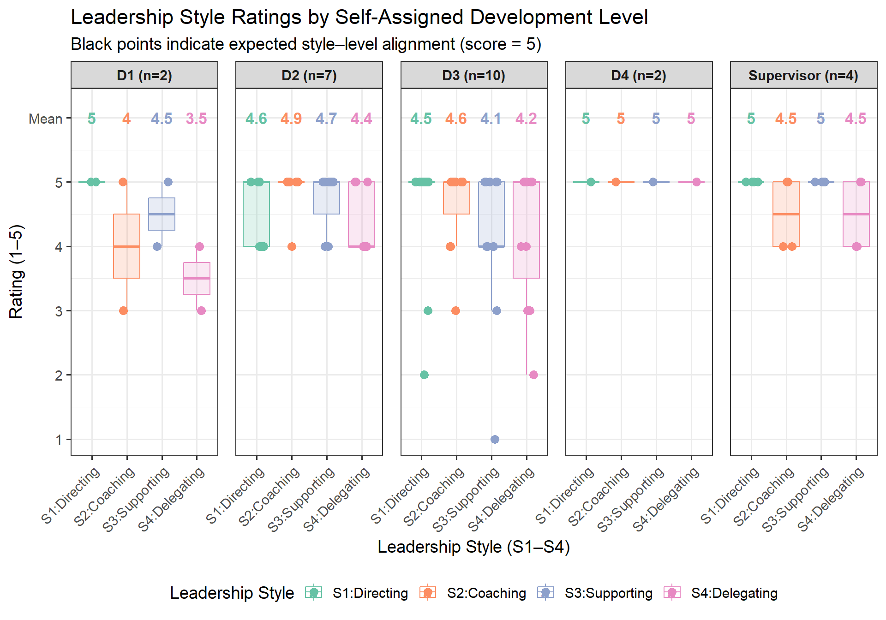
d2 <- long_data %>%
filter(Question %in% c("Q5","Q6")) %>%
group_by(Self) %>%
summarise(mean_score = mean(Score, na.rm = TRUE), .groups = 'drop')
# Plot
ggplot(d2, aes(x = Self, y = mean_score, fill = Self)) +
geom_col() +
geom_text(
aes(x = Self, y = 6, label = round(mean_score, 1), color = Self),
size = 4.5,
fontface = "bold"
)+
labs(
title = "Style Flexibility: Average Scores by Self-Assigned Development Level",
subtitle = "Comparison of Adjustability and Adaptability across Development Levels",
x = "Self-Assigned Development Level (D1–D4)",
y = "Average Score (1–5 Scale)",
fill = "Style Flexibility Dimension"
) +
theme_bw(base_size = 14) +
theme(legend.position = "bottom") +
scale_fill_brewer(palette = "Set2", name = "") +
scale_y_continuous(
breaks = c(1, 2, 3, 4, 5, 6),
labels = c("1", "2", "3", "4", "5", "Mean")
)+
guides(color = "none")
d3 <- long_data %>%
filter(Question %in% c("Q7","Q8")) %>%
group_by(Self) %>%
summarise(mean_score = mean(Score, na.rm = TRUE), .groups = 'drop')
# Plot
ggplot(d3, aes(x = Self, y = mean_score, fill = Self)) +
geom_col(position = position_dodge(width = 0.9)) +
geom_text(
aes(x = Self, y = 6, label = round(mean_score, 1), color = Self),
size = 4.5,
fontface = "bold"
)+
labs(
title = "Adaptability : Average Scores by Self-Assigned Development Level",
subtitle = "Comparison of Adjustability and Adaptability across Development Levels",
x = "Self-Assigned Development Level (D1–D4)",
y = "Average Score (1–5 Scale)",
fill = ""
) +
theme_bw(base_size = 14) +
theme(legend.position = "bottom") +
scale_fill_brewer(palette = "Set2", name = "") +
scale_y_continuous(
breaks = c(1, 2, 3, 4, 5, 6),
labels = c("1", "2", "3", "4", "5", "Mean")
)+
guides(color = "none")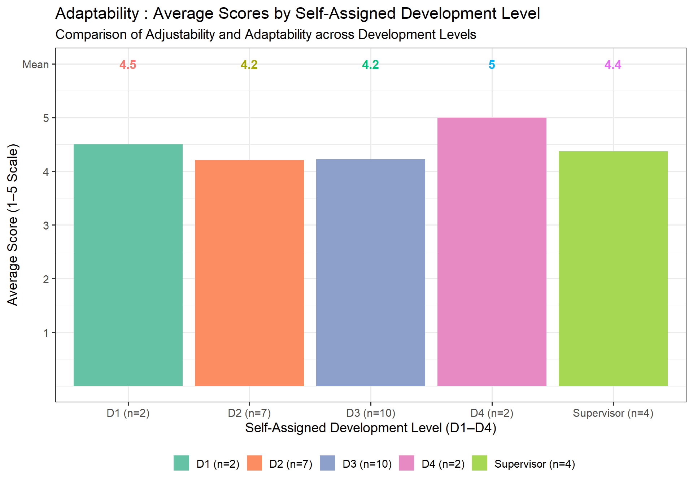
long_data <- data %>%
pivot_longer(cols = Q1:Q23, names_to = "Question", values_to = "Score") %>%
mutate(
Style = case_when(
Question == "Q9" ~ "S2:Coaching",
Question == "Q10" ~ "S3:Supporting",
Question == "Q11" ~ "S1:Directing",
Question == "Q12" ~ "S4:Delegating"
)
) %>%
mutate(Style = factor(Style, levels = c("S1:Directing", "S2:Coaching",
"S3:Supporting",
"S4:Delegating")))
expected_data <- tibble(
Self = c("D1 (n=2)", "D2 (n=7)", "D3 (n=10)", "D4 (n=2)"),
Style = c("S1:Directing", "S2:Coaching",
"S3:Supporting", "S4:Delegating"),
Expected = 5
)
d4 <- long_data %>%
filter(Question %in% c("Q9","Q10","Q11","Q12"))
mean_data <- d4 %>%
group_by(Style, Question, Self) %>%
summarise(mean_score = round(mean(Score, na.rm = TRUE), digits = 1), .groups = 'drop')
ggplot(d4, aes(x = Style, y = Score, fill= Style, color = Style)) +
geom_boxplot(outlier.shape = NA, alpha=0.2, notch= F) +
# geom_violin(outlier.shape = NA, alpha=0.2, notch= F) +
geom_jitter(width = 0.2, height =0, size=3)+
# geom_point(data = expected_data, aes(x = Style, y = Expected),
# shape = 18, size = 4, inherit.aes = FALSE) +
facet_wrap(~ Self, nrow = 1) +
labs(
title = "Communication Style Ratings by Self-Assigned Development Level",
subtitle = "Black points indicate expected style–level alignment (score = 5)",
x = "Communication Style (S1–S4)",
y = "Rating (1–5)",
fill = "Development Level (Self) "
) +
theme_bw(base_size = 14) +
theme(legend.position = "bottom",
strip.text = element_text(face = "bold"),
panel.spacing = unit(1, "lines"),
axis.text.x = element_text(angle = 45, hjust = 1)) +
scale_color_brewer(palette = "Set2", name = "Leadership Style") +
scale_fill_brewer(palette = "Set2", name = "Leadership Style")+
guides(fill = "none")+
geom_text(
data = mean_data,
aes(x = Style, y = 6, label = round(mean_score, 1), color = Style),
size = 4.5,
fontface = "bold",
inherit.aes = FALSE
)+
scale_y_continuous(
limits = c(1, 6.2),
breaks = c(1, 2, 3, 4, 5, 6),
labels = c("1", "2", "3", "4", "5", "Mean")
)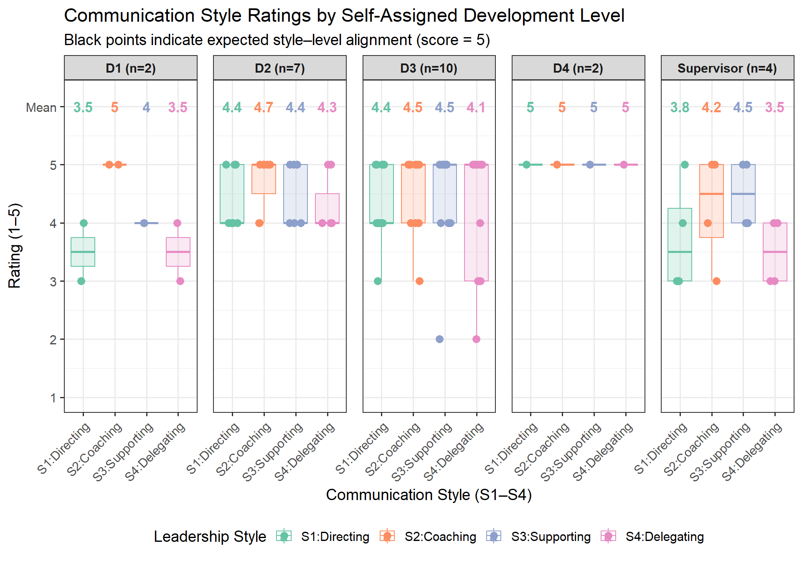
d5 <- long_data %>%
filter(Question %in% c("Q13","Q14")) %>%
group_by(Self) %>%
summarise(mean_score = mean(Score, na.rm = TRUE), .groups = 'drop')
# Plot
ggplot(d5, aes(x = Self, y = mean_score, fill = Self)) +
geom_col(position = position_dodge(width = 0.9)) +
geom_text(
aes(x = Self, y = 6, label = round(mean_score, 1), color = Self),
size = 4.5,
fontface = "bold"
)+
labs(
title = "Perception and Feedback : Average Scores by Self-Assigned Development Level",
subtitle = "Comparison of Perception and Feedback across Development Levels",
x = "Self-Assigned Development Level (D1–D4)",
y = "Average Score (1–5 Scale)",
fill = ""
) +
theme_bw(base_size = 14) +
theme(legend.position = "bottom") +
scale_fill_brewer(palette = "Set2", name = "") +
scale_y_continuous(
breaks = c(1, 2, 3, 4, 5, 6),
labels = c("1", "2", "3", "4", "5", "Mean")
)+
guides(color = "none")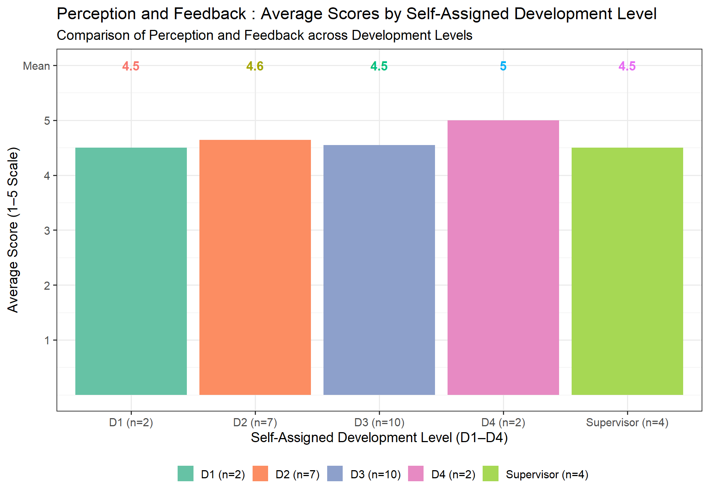
d6 <- long_data %>%
filter(Question %in% c("Q15","Q16")) %>%
group_by(Self) %>%
summarise(mean_score = mean(Score, na.rm = TRUE), .groups = 'drop')
# Plot
ggplot(d6, aes(x = Self, y = mean_score, fill = Self)) +
geom_col(position = position_dodge(width = 0.9)) +
geom_text(
aes(x = Self, y = 6, label = round(mean_score, 1), color = Self),
size = 4.5,
fontface = "bold"
)+
labs(
title = "Diagnostic Accuracy : Average Scores by Self-Assigned Development Level",
subtitle = "Comparison of Diagnostic Accuracy across Development Levels",
x = "Self-Assigned Development Level (D1–D4)",
y = "Average Score (1–5 Scale)",
fill = ""
) +
theme_bw(base_size = 14) +
theme(legend.position = "bottom") +
scale_fill_brewer(palette = "Set2", name = "") +
scale_y_continuous(
breaks = c(1, 2, 3, 4, 5, 6),
labels = c("1", "2", "3", "4", "5", "Mean")
)+
guides(color = "none")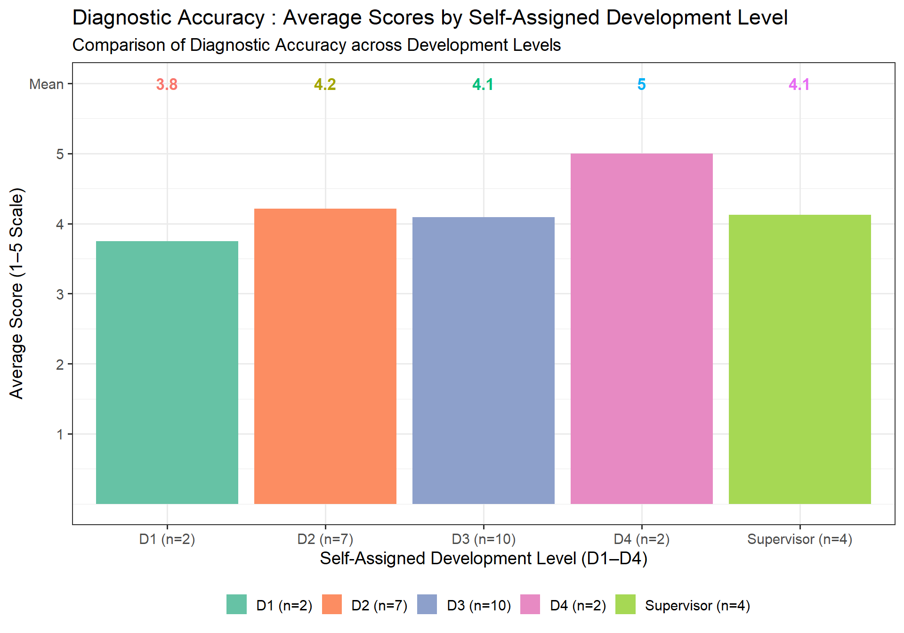
d7 <- long_data %>%
filter(Question %in% c("Q17","Q18")) %>%
group_by(Self) %>%
summarise(mean_score = mean(Score, na.rm = TRUE), .groups = 'drop')
# Plot
ggplot(d7, aes(x = Self, y = mean_score, fill = Self)) +
geom_col(position = position_dodge(width = 0.9)) +
geom_text(
aes(x = Self, y = 6, label = round(mean_score, 1), color = Self),
size = 4.5,
fontface = "bold"
)+
labs(
title = "Style Appropriateness : Average Scores by Self-Assigned Development Level",
subtitle = "Comparison of Style Appropriateness across Development Levels",
x = "Self-Assigned Development Level (D1–D4)",
y = "Average Score (1–5 Scale)",
fill = ""
) +
theme_bw(base_size = 14) +
theme(legend.position = "bottom") +
scale_fill_brewer(palette = "Set2", name = "") +
scale_y_continuous(
breaks = c(1, 2, 3, 4, 5, 6),
labels = c("1", "2", "3", "4", "5", "Mean")
)+
guides(color = "none")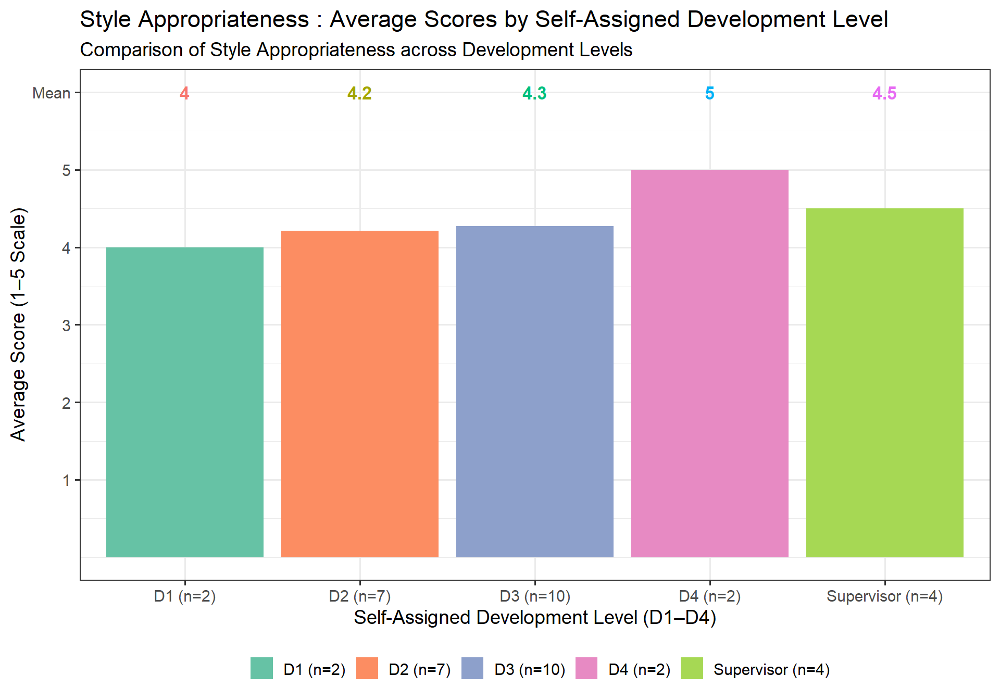
long_data <- data %>%
pivot_longer(cols = Q1:Q23, names_to = "Question", values_to = "Score") %>%
mutate(
Style = case_when(
Question == "Q19" ~ "Guidance",
Question == "Q20" ~ "Level of support",
Question == "Q21" ~ "Skill improvement"
)
) %>%
mutate(Style = factor(Style, levels = c("Guidance",
"Level of support",
"Skill improvement")))
# expected_data <- tibble(
# Self = c("D1 (n=2)", "D2 (n=7)", "D3 (n=10)", "D4"),
# Style = c("Guidance",
# "Level of support",
# "Skills improvement"),
# Expected = 5
# )
d8 <- long_data %>%
filter(Question %in% c("Q19","Q20","Q21"))
mean_data <- d8 %>%
group_by(Style, Question, Self) %>%
summarise(mean_score = round(mean(Score, na.rm = TRUE), digits = 1), .groups = 'drop')
ggplot(d8, aes(x = Style, y = Score, fill= Style, color = Style)) +
geom_boxplot(outlier.shape = NA, alpha=0.2, notch= F) +
# geom_violin(outlier.shape = NA, alpha=0.2, notch= F) +
geom_jitter(width = 0.2, height =0, size=3)+
# geom_point(data = expected_data, aes(x = Style, y = Expected),
# shape = 18, size = 4, inherit.aes = FALSE) +
facet_wrap(~ Self, nrow = 1) +
labs(
title = "Developmental Focus (Growth-Oriented Leadership)",
subtitle = "Ratings by Self-Assigned Development Level across Leadership Styles",
x = "Leadership Style (S1–S4)",
y = "Rating (1–5)",
fill = "Development Level (Self) "
) +
theme_bw(base_size = 14) +
theme(legend.position = "bottom",
strip.text = element_text(face = "bold"),
panel.spacing = unit(1, "lines"),
axis.text.x = element_text(angle = 45, hjust = 1)) +
scale_color_brewer(palette = "Set2", name = "Leadership Style") +
scale_fill_brewer(palette = "Set2", name = "Leadership Style")+
guides(fill = "none")+
geom_text(
data = mean_data,
aes(x = Style, y = 6, label = round(mean_score, 1), color = Style),
size = 4.5,
fontface = "bold",
inherit.aes = FALSE
)+
scale_y_continuous(
limits = c(1, 6.2),
breaks = c(1, 2, 3, 4, 5, 6),
labels = c("1", "2", "3", "4", "5", "Mean")
)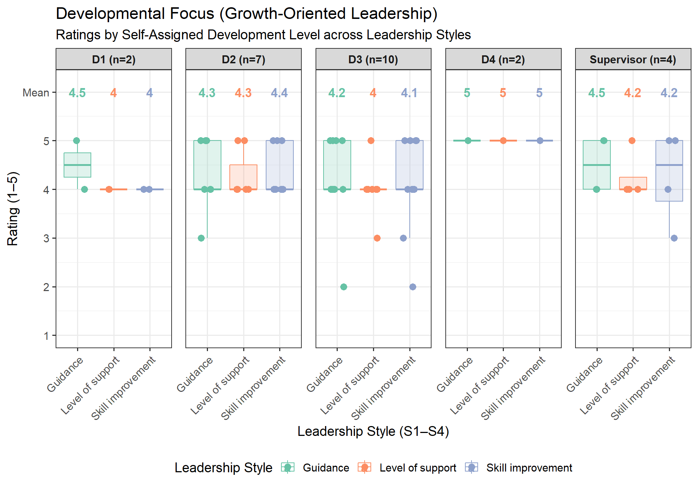
d9 <- long_data %>%
filter(Assigned != "Supervisor") %>%
filter(Question %in% c("Q22","Q23")) %>%
group_by(Self) %>%
summarise(mean_score = mean(Score, na.rm = TRUE), .groups = 'drop')
# Plot
ggplot(d9, aes(x = Self, y = mean_score, fill = Self)) +
geom_col(position = position_dodge(width = 0.9)) +
geom_text(
aes(x = Self, y = 6, label = round(mean_score, 1), color = Self),
size = 4.5,
fontface = "bold"
)+
labs(
title = "Emotional Intelligence : Average Scores by Self-Assigned Development Level",
subtitle = "Comparison of Emotional Intelligence across Development Levels",
x = "Self-Assigned Development Level (D1–D4)",
y = "Average Score (1–5 Scale)",
fill = ""
) +
theme_bw(base_size = 14) +
theme(legend.position = "bottom") +
scale_fill_brewer(palette = "Set2", name = "") +
scale_y_continuous(
breaks = c(1, 2, 3, 4, 5, 6),
labels = c("1", "2", "3", "4", "5", "Mean")
)+
guides(color = "none")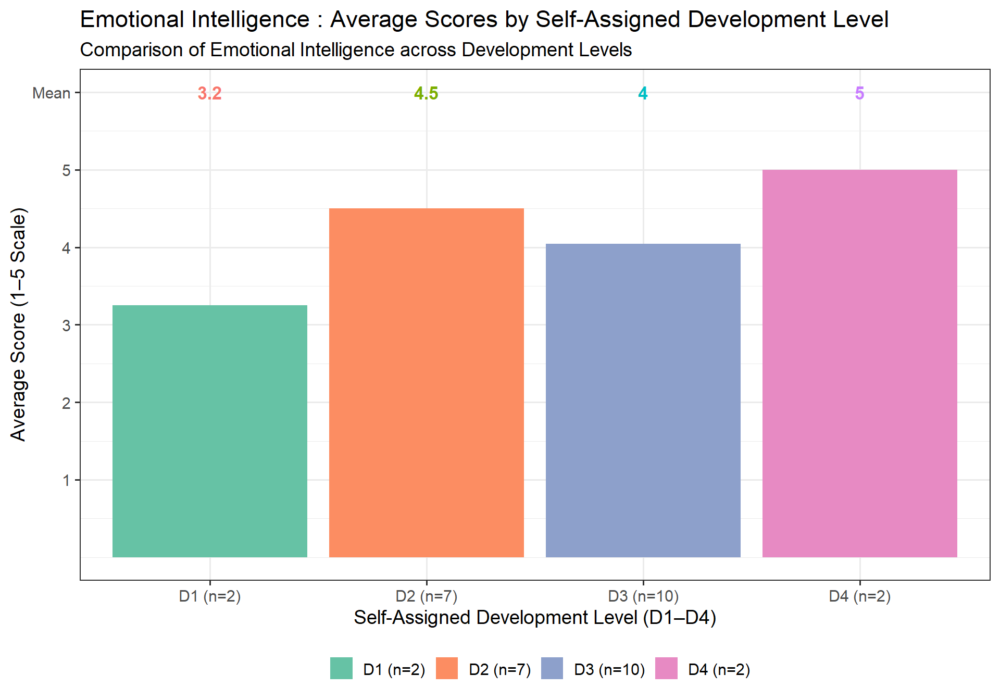
# Define dimension-question mapping
dimension_map <- list(
"Leadership Style" = c("Q1", "Q2", "Q3", "Q4"),
"Adaptability" = c("Q5", "Q6"),
"Follower Readiness Awareness" = c("Q7", "Q8"),
"Communication Style" = c("Q9", "Q10", "Q11", "Q12"),
"Perception and Feedback" = c("Q13", "Q14"),
"Diagnostic Accuracy" = c("Q15", "Q16"),
"Style Appropriateness" = c("Q17", "Q18"),
"Developmental Focus" = c("Q19", "Q20", "Q21"),
"Emotional Intelligence" = c("Q22", "Q23")
)
# Compute averages per respondent across dimensions
df_long <- data %>%
pivot_longer(cols = starts_with("Q"), names_to = "Question", values_to = "Score")
# Link questions to dimensions
question_map <- tibble(
Dimension = rep(names(dimension_map), times = sapply(dimension_map, length)),
Question = unlist(dimension_map)
)
df_combined <- df_long %>%
left_join(question_map, by = "Question") %>%
filter(!is.na(Dimension)) #%>%
# filter(Self_O != "Supervisor")
mean_data <- df_combined %>%
group_by(Self_O,Dimension) %>%
summarise(mean_score = round(mean(Score, na.rm = TRUE), digits = 1), .groups = 'drop') %>%
mutate(Dimension = factor(Dimension, levels = c("Leadership Style","Adaptability","Follower Readiness Awareness",
"Communication Style","Perception and Feedback","Diagnostic Accuracy",
"Style Appropriateness","Developmental Focus","Emotional Intelligence")))
ggplot(mean_data, aes(x = Self_O, y = mean_score, fill = Self_O)) +
geom_col() +
geom_text(
aes(x = Self_O, y = 6, label = round(mean_score, 1), color = Self_O),
size = 4.5,
fontface = "bold"
)+
facet_wrap(~Dimension)+
labs(
title = "Style Flexibility: Average Scores by Self-Assigned Development Level",
subtitle = "Comparison of Adjustability and Adaptability across Development Levels",
x = "Self-Assigned Development Level (D1–D4)",
y = "Average Score (1–5 Scale)",
fill = "Style Flexibility Dimension"
) +
theme_bw(base_size = 14) +
theme(legend.position = "bottom") +
scale_fill_brewer(palette = "Set2", name = "") +
scale_y_continuous(
breaks = c(1, 2, 3, 4, 5, 6),
labels = c("1", "2", "3", "4", "5", "Mean")
)+
guides(color = "none")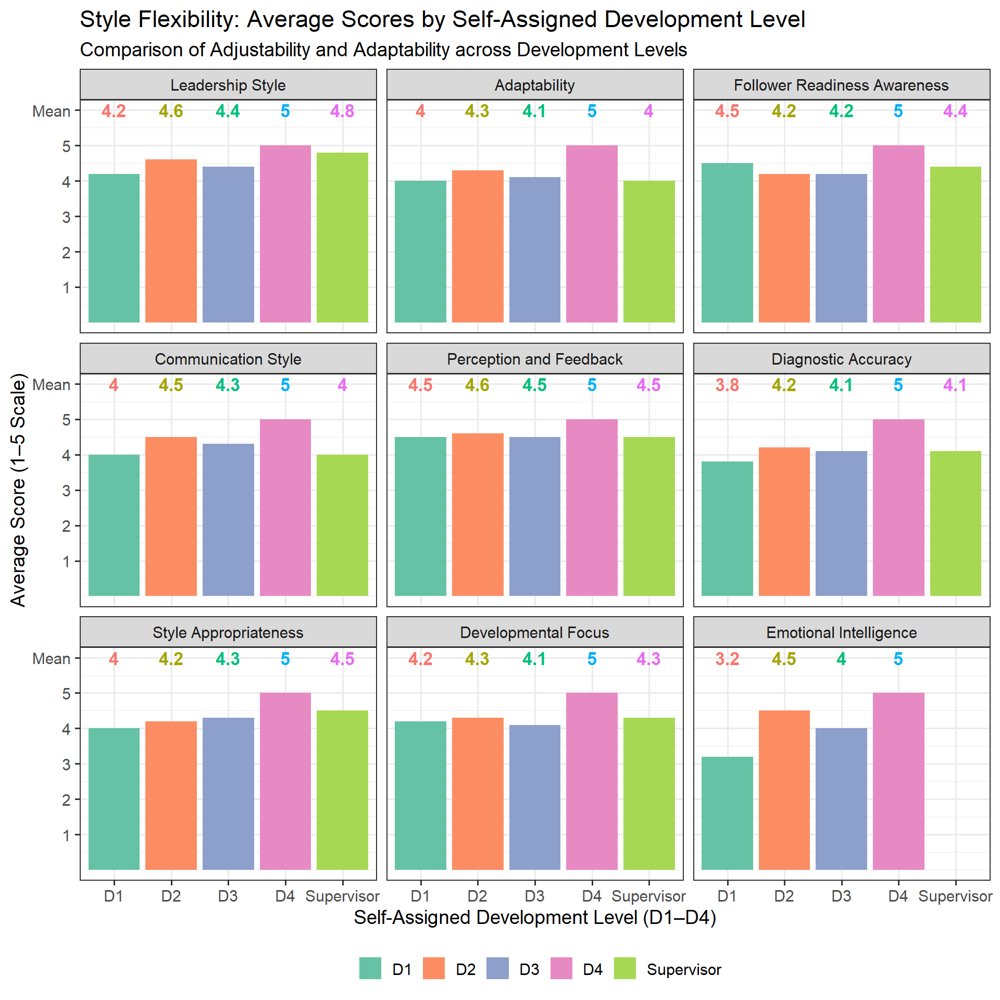
long_data <- data %>%
pivot_longer(cols = Q1:Q23, names_to = "Question", values_to = "Score")
# Define dimension-question mapping
dimension_map <- list(
"Leadership Style Identification" = c("Q1", "Q2", "Q3", "Q4"),
"Adaptability (Style Flexibility)" = c("Q5", "Q6"),
"Follower Readiness Awareness" = c("Q7", "Q8"),
"Communication Style" = c("Q9", "Q10", "Q11", "Q12"),
"Perception and Feedback" = c("Q13", "Q14"),
"Diagnostic Accuracy" = c("Q15", "Q16"),
"Style Appropriateness" = c("Q17", "Q18"),
"Developmental Focus" = c("Q19", "Q20", "Q21"),
"Emotional Intelligence" = c("Q22", "Q23")
)
# Compute averages per respondent across dimensions
df_long <- data %>%
pivot_longer(cols = starts_with("Q"), names_to = "Question", values_to = "Score")
question_map <- tibble(
Dimension = rep(names(dimension_map), times = sapply(dimension_map, length)),
Question = unlist(dimension_map)
)
df_combined <- df_long %>%
left_join(question_map, by = "Question") %>%
filter(!is.na(Dimension))
# Compute mean per dimension per respondent
dimension_scores <- df_combined %>%
group_by(ID, Self, Assigned, Dimension) %>%
summarise(Avg_Score = mean(Score, na.rm = TRUE), .groups = "drop")
# Separate Peer and Self responses
peer_avg <- dimension_scores %>%
filter(Assigned != "Supervisor") %>%
group_by(Dimension) %>%
summarise(Peer = mean(Avg_Score, na.rm = TRUE))
supervis_avg <- dimension_scores %>%
filter(Assigned == "Supervisor") %>%
group_by(Dimension) %>%
summarise(Supervisor = mean(Avg_Score, na.rm = TRUE))
# Example Peer averages from previous step (replace these with your actual values if needed)
peer_scores <- peer_avg$Peer
# Self-assessment scores from your table
# self_scores <- c(
# 4.00, 3.50, 3.00, 3.50, 3.50, 2.50, 4.00, 4.33, 3.00
# )
# Leadership Style Identification 4.00
# Adaptability (Style Flexibility) 3.50
# Follower Readiness Awareness 3.50
# Communication Style 4.20
# Perception and Feedback 4.00
# Diagnostic Accuracy 3.50
# Style Appropriateness 4.00
# Developmental Focus 4.33
# Emotional Intelligence 3.50
self_scores <- c(
3.5, 4.2, 4.33, 3.5, 3.5, 3.5, 4, 4, 4
)
# Create data frame for radar chart
radar_data <- data.frame(
row.names = c("Max", "Min", "Peer", "Self"),
'Style Identification' = c(5, 1, peer_scores[7], self_scores[1]),
'Adaptability' = c(5, 1, peer_scores[1], self_scores[2]),
'Readiness Awareness' = c(5, 1, peer_scores[6], self_scores[3]),
'Communication Style' = c(5, 1, peer_scores[2], self_scores[4]),
'Perception and Feedback' = c(5, 1, peer_scores[8], self_scores[5]),
'Diagnostic Accuracy' = c(5, 1, peer_scores[4], self_scores[6]),
'Style Appropriateness' = c(5, 1, peer_scores[9], self_scores[7]),
'Developmental Focus' = c(5, 1, peer_scores[3], self_scores[8]),
'Emotional Intelligence' = c(5, 1, peer_scores[5], self_scores[9])
)
radar_echart <- data.frame(
Dimension = c(
"Adaptability", "Communication Style", "Developmental Focus",
"Diagnostic Accuracy","Emotional Intelligence", "Readiness & Awareness",
"Style Identification",
"Perception & Feedback", "Style Appropriateness"
),
Peer = round(peer_scores, digits = 1),
Self = self_scores
)
# Prepare data
radar_data <- radar_echart
# Define indicators with custom label style
indicators <- lapply(1:nrow(radar_data), function(i) {
list(
name = radar_data$Dimension[i],
max = 5,
axisLabel = list(
fontSize = 14,
color = "#333333"
),
nameTextStyle = list(
fontSize = 14,
color = "#333333"
)
)
})
# Build the enhanced radar chart
radar_data |>
e_charts(Dimension) |>
e_radar(Peer, name = "Peer Evaluation", symbolSize = 12, lineStyle = list(width = 4)) |>
e_radar(
Self,
name = "Self Evaluation",
symbol = "circle",
symbolSize = 10,
lineStyle = list(width = 5, type = "dashed"),
areaStyle = list(opacity = 0.5)
)|>
e_radar(Self, name = "Self Evaluation", symbolSize = 12, lineStyle = list(width = 4, type = "dashed")) |>
e_radar_opts(
indicator = indicators,
splitNumber = 5,
axisLine = list(show = TRUE),
splitLine = list(lineStyle = list(color = "#ccc")),
splitArea = list(show = FALSE)
) |>
e_tooltip(trigger = "item") |>
e_legend(left = "1%", textStyle = list(fontSize = 16)) |>
# e_legend(show = FALSE) |>
e_theme("roma")df <- data.frame(
Dimension = c(
"Style Identification", "Adaptability", "Readiness Awareness",
"Communication Style", "Perception and Feedback", "Diagnostic Accuracy",
"Style Appropriateness", "Developmental Focus", "Emotional Intelligence"
),
Peer_Feedback = c(4.48,4.21,4.29,4.38,4.60,4.14,4.27,4.22,4.17),
Self_Assessment = c(4.00, 3.50, 3.50, 4.20, 4.00, 3.50, 4.00, 4.33, 3.50),
Supervisor = c(4.75, 4.00, 4.38, 4.00, 4.50, 4.12, 4.50, 4.33, NA)
)
# Reshape the data from wide to long format
df_long <- df %>%
pivot_longer(
cols = c(Peer_Feedback, Self_Assessment, Supervisor),
names_to = "Feedback_Type",
values_to = "Score"
) %>%
mutate(Score = round(Score, 1))
# Order the Dimension factor for better visualization (optional but recommended)
df_long$Dimension <- factor(df_long$Dimension, levels = df$Dimension)
longData <- df_long %>%
filter(Feedback_Type != "Supervisor")
# Wrap dimension labels to a width of 15 characters
longData$Dimension <- str_wrap(longData$Dimension, width = 10)
supData <- df_long %>%
filter(Feedback_Type == "Supervisor")
supData$Dimension <- str_wrap(supData$Dimension, width = 10)
longData <- longData %>%
mutate(Feedback_Type = factor(Feedback_Type,
levels = c("Self_Assessment","Peer_Feedback"))) %>%
mutate(Dimension = factor(Dimension, levels = c("Style\nIdentification", "Adaptability", "Readiness\nAwareness",
"Communication\nStyle", "Perception\nand\nFeedback","Diagnostic\nAccuracy",
"Style\nAppropriateness", "Developmental\nFocus", "Emotional\nIntelligence")))
supData <- supData %>%
mutate(Dimension = factor(Dimension, levels = c("Style\nIdentification", "Adaptability", "Readiness\nAwareness",
"Communication\nStyle", "Perception\nand\nFeedback","Diagnostic\nAccuracy",
"Style\nAppropriateness", "Developmental\nFocus", "Emotional\nIntelligence")))
ggplot(longData, aes(x = Dimension, y = Score, fill = Feedback_Type)) +
# geom_bar(stat = "identity", position = position_dodge(width = 0.8), width = 0.7) +
geom_chicklet(stat = "identity", position = position_dodge(width = 0.8),
width = 0.65, radius = grid::unit(8, "pt")) +
geom_text(aes(y = 3, label = sprintf("%.1f", Score)),
position = position_dodge(width = 0.8),
vjust = -0.1,
size = 3.5,
fontface = "bold",
color = "black") +
geom_line(data = supData,
aes(x = as.numeric(Dimension), y = Score),
inherit.aes = FALSE,
linewidth = 1.5,
alpha=0.5,
show.legend = FALSE,
color = "deepskyblue4")+
geom_point(data = supData,
aes(x = as.numeric(Dimension), y = Score),
# inherit.aes = FALSE,
# show.legend = FALSE,
size= 5,
color = "deepskyblue4")+
geom_text(data = supData, aes(label = sprintf("%.1f", Score)),
position = position_dodge(width = 0.8),
# inherit.aes = FALSE,
# show.legend = FALSE,
vjust = -0.75,
size = 5,
alpha = 0.7,
fontface = "bold",
color = "deepskyblue4") +
labs(
# title = "Assessment Scores by Dimension and Feedback Type",
x = NULL, # X and Y labels are swapped due to coord_flip
y = "Score (1-5) \n",
# fill = "Feedback Type"
) +
scale_x_discrete(expand = expansion(add = c(0.5, 0.5))) + # Add some padding to x-axis
scale_y_continuous(limits = c(0, 5), breaks = seq(0, 5, by = 1), expand = c(0, 0.25)) + # Set y-axis limits and breaks
# coord_flip() + # FLIP THE COORDINATES
theme_bw() +
theme(
axis.text.y = element_text(size = 13, face = "bold"),
axis.text.x = element_text(size = 11, face = "bold"),
axis.title = element_text(size = 12, face = "bold"),
plot.title = element_text(size = 16, face = "bold", hjust = 0.5),
legend.position = "bottom",
legend.title=element_blank(),
# legend.title = element_text(size = 10, face = "bold"),
legend.text = element_text(size = 9),
# panel.grid.major.y = element_blank(), # Remove horizontal grid lines
panel.grid.minor.y = element_blank()
) +
scale_fill_brewer(palette = "Set2")
df <- read.csv("Data_plot.csv") %>%
mutate(Self_O = Self,
Self = case_when(Self == "D1" ~ "D1 (n=2)",
Self == "D2" ~ "D2 (n=7)",
Self == "D3" ~ "D3 (n=10)",
Self == "D4" ~ "D4 (n=2)",
Self == "Supervisor" ~ "Supervisor (n=4)")) %>%
filter(Self_O != "Supervisor")
# Define question mapping for each leadership style
style_questions <- list(
S1_Directing = c("Q1", "Q11", "Q15", "Q16", "Q17" ),
S2_Coaching = c("Q3", "Q9", "Q13", "Q19", "Q20"),
S3_Supporting = c("Q4", "Q7", "Q8", "Q10", "Q14", "Q22", "Q23"),
S4_Delegating = c("Q2", "Q12", "Q18")
)
# Function to compute average scores for each style per respondent
compute_styles <- function(data_row) {
sapply(style_questions, function(questions) {
mean(as.numeric(data_row[questions]), na.rm = TRUE)
})
}
# Apply function to all respondents
style_scores <- as.data.frame(t(apply(df, 1, compute_styles)))
# Add Responder ID and Self-assigned D level
style_scores$Responder <- df$ID
style_scores$Self_D_Level <- df$Self
# Map expected style based on self-assigned development level
style_scores$Expected_Style <- recode(style_scores$Self_D_Level,
"D1" = "S1_Directing",
"D2" = "S2_Coaching",
"D3" = "S3_Supporting",
"D4" = "S4_Delegating")
# Determine estimated style (highest scoring style)
style_scores$Estimated_Style <- apply(style_scores[, 1:4], 1, function(x) names(x)[which.max(x)])
# Identify match or mismatch
style_scores$Match <- style_scores$Estimated_Style == style_scores$Expected_Style
# Select relevant columns to view
final_result <- style_scores %>%
select(Responder, Self_D_Level, Estimated_Style, Expected_Style, Match)
#################################################################
# # Compute average style scores per person
style_scores <- df %>%
rowwise() %>%
mutate(
S1_Directing = mean(c_across(all_of(style_questions$S1_Directing)), na.rm = TRUE),
S2_Coaching = mean(c_across(all_of(style_questions$S2_Coaching)), na.rm = TRUE),
S3_Supporting= mean(c_across(all_of(style_questions$S3_Supporting)), na.rm = TRUE),
S4_Delegating= mean(c_across(all_of(style_questions$S4_Delegating)), na.rm = TRUE)
) %>%
ungroup()
# Group by D-Level and calculate mean for each style
heatmap_data <- style_scores %>%
group_by(Self) %>%
summarise(
S1_Directing = mean(S1_Directing, na.rm = TRUE),
S2_Coaching = mean(S2_Coaching, na.rm = TRUE),
S3_Supporting = mean(S3_Supporting, na.rm = TRUE),
S4_Delegating = mean(S4_Delegating, na.rm = TRUE)
) %>%
filter(Self %in% c("D1 (n=2)", "D2 (n=7)", "D3 (n=10)", "D4 (n=2)")) %>%
arrange(factor(Self, levels = c("D1 (n=2)", "D2 (n=7)", "D3 (n=10)", "D4 (n=2)")))
# Reshape to long format for heatmap
heatmap_long <- melt(heatmap_data, id.vars = "Self", variable.name = "Style", value.name = "Avg_Score")
max_val <- heatmap_long %>%
arrange(desc(Avg_Score)) %>%
filter(!duplicated(Self))
ggplot(heatmap_long, aes(x = Avg_Score, y = Self, color = Style, fill = Style)) +
geom_point(size = 4.5, shape=19,
position = position_dodge(width = 0.15)) +
# geom_point(size = 5, shape=19, alpha=0.3) +
# geom_point(size = 7, shape=19, alpha=0.2) +
geom_point(size = 10, shape=19, alpha=0.15) +
geom_segment(aes(x = 0, xend = Avg_Score, y = Self, yend = Self), linetype = "dashed") +
labs(
# title = "Average Style Scores by Development Level",
x = "Average Score",
y = "Development Level"
) +
theme_bw(base_size = 14)+
theme( legend.position = "bottom",
legend.title=element_blank(),
axis.text = element_text(face = "bold"),
plot.title = element_text(face = "bold", size = 16),
plot.subtitle = element_text(size = 12, face = "italic")) +
# scale_color_brewer(palette = "Set2", name = "")+
guides(fill = "none")+
geom_label(data = max_val,
aes(x = 6, label = signif(Avg_Score, digits = 2), fill=Style ),
color = "white", #color = "black",
fontface = "bold", size = 3.5,
label.size = 0.2,
show.legend = FALSE)+
scale_x_continuous(
limits = c(1, 6.2),
breaks = c(1, 2, 3, 4, 5, 6),
labels = c("1", "2", "3", "4", "5", "Top Style")
)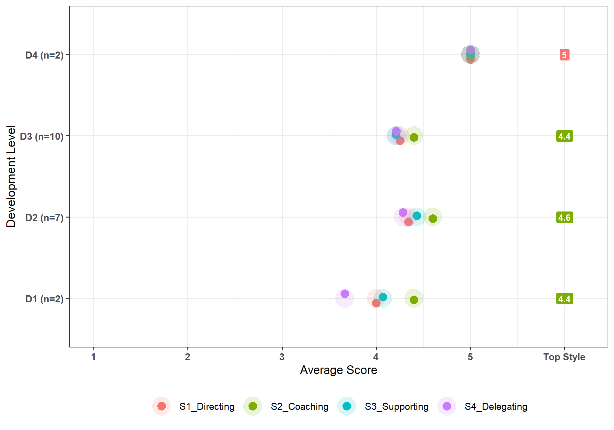
bar_data <- final_result %>%
group_by(Self_D_Level, Estimated_Style) %>%
summarise(n = n()) %>%
mutate(prop = n / sum(n)) %>%
ungroup() %>%
mutate(Perp = paste0(signif(prop*100, 2),"%")) %>%
mutate(Perp = ifelse(Estimated_Style== "S1_Directing" & Self_D_Level == "D2 (n=7)",
"28%", Perp))
# Plot
ggplot(bar_data, aes(x = Self_D_Level, y = prop, fill = Estimated_Style)) +
# geom_bar(stat = "identity", position = "fill", width = 0.5) +
geom_chicklet( position = "fill", width = 0.65)+
geom_text(
aes(label = Perp),
position = position_fill(vjust = 0.5),
size = 4,
color = "black"
) +
scale_y_continuous(labels = percent_format()) +
labs(
x = "Development Level (D1–D4)",
y = "Proportion of Respondents",
fill = NULL
) +
theme_bw(base_size = 16) +
theme(legend.position = "bottom")+
scale_fill_brewer(palette = "Set2", name = "")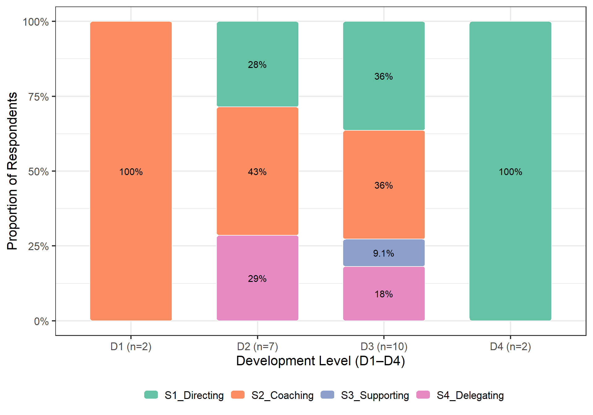